금형제작기능장 (2003-07-20 기출문제)
1과목: 임의 구분
1. 유체의 에너지를 사용하여 기계적 일을 하는 부분은 ?
- 유압 액추에이터
- 유압밸브
- 유압탱크
- 오일 미스트
(정답률: 알수없음)

2. 공기압 실린더의 주요 구성품이 아닌 것은 ?
- 실린더튜브
- 피스톤로드
- 피스톤
- 스풀
(정답률: 알수없음)
3. 대기압을 0 으로 하여 측정한 압력은 ?
- 표준압력
- 양정압력
- 절대압력
- 게이지압력
(정답률: 알수없음)
4. 2개의 복동 실린더로 구성되어 있으며 단계적 출력제어가 가능한 실린더는 ?
- 충격실린더
- 램형실린더
- 탠덤실린더
- 다위치형 실린더
(정답률: 알수없음)
5. 다음의 그림은 공유합 회로도이다. 이중 플립플롭(Flip-Flop)회로는?
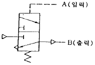
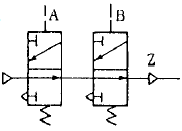
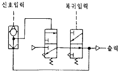
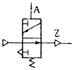
(정답률: 알수없음)
6. 고체침탄법에서 침탄제로서 가장 많이 사용하는 것은?
- 목탄 60%와 BaCO3 40%의 혼합물
- NaCN 와 KCN의 혼합물
- 목탄 또는 KCN의 혼합물
- BaCl2 및 CaCO3의 혼합물
(정답률: 알수없음)
7. 일반적으로 담금질 할 때 냉각제가 강으로부터 열을 빼앗는 과정은 몇단계로 나눌수 있는가 ?
- 4단계
- 3단계
- 2단계
- 1단계
(정답률: 알수없음)
8. 강의 열처리에서 TTT곡선과 가장 관계있는 것은?
- 항온변태
- 탄성
- 인장
- 풀림 열처리
(정답률: 알수없음)
9. 조미니 시험(Jominy end quenching test)이란 무엇 인가?
- 강의 연신율 측정
- 강의 균열 검사
- 강의 경화능 측정
- 강의 소입조직 검사
(정답률: 알수없음)
10. Al합금에서 완전히 고용체가 되는 온도까지 가열했다가 급냉하여 그 조직을 과포화 고용체로 만드는 것은 ?
- 인공시효처리
- Annealing
- 안정화처리
- 고용체화 처리
(정답률: 알수없음)
11. Alnico(MK 강)의 주된 용도는?
- 축류재이다.
- 공구재이다.
- 자석강이다.
- 다이용강이다.
(정답률: 알수없음)
12. SM45C 란 KS에서 어느 강종을 말하는가?
- 기계구조용 탄소강
- 기계구조용 몰리브덴강
- 용접구조용 탄소강
- 냉간압연 스테인레스강
(정답률: 알수없음)
13. 금형 온도제어에 관한 다음 설명 중 가장 잘못된 것은?
- 금형온도가 높으면 사출수지의 주입시간이 짧아진다.
- 금형온도가 낮으면 사출수지의 냉각시간이 짧아진다.
- 하나로 연결된 냉각수 회로에서 부분적인 냉각효과를 크게하려면 그 부분에만 냉각수 구멍을 크게한다.
- 냉각수 입구측과 출구측의 온도차이가 크면 금형이 변형 될 수 있다.
(정답률: 알수없음)
14. 다음 플라스틱 재료중 열경화성 수지에 해당되는 것은 ?
- 나일론 6 (Nylon 6)
- 폴리에틸렌 (Polyethylene)
- 멜라민 (Melamine)
- 폴리프로필렌 (Polypropylene)
(정답률: 알수없음)
15. 사출금형에서 리턴핀(안전핀)의 역할은 무엇 인가?
- 리턴핀은 사출후 성형품을 안전하게 꺼내는 핀 이다.
- 리턴핀은 이젝터 풀레이트를 받치는 핀이다.
- 리턴핀은 금형이 닫힐 때 이젝터 플레이트만을 물러나게 하는 핀으로 캐비티나 코어핀을 보호한다.
- 리턴핀은 단순한 가이드 핀이다.
(정답률: 알수없음)
16. 다음 중 사출성형 금형의 파팅 라인(parting line)에 관한 설명이 가장 바르게 된 것은 ?
- 금형의 크기에 따라 결정된다.
- 제품의 형상에 따라 필연적으로 결정된다.
- 제품의 크기에 따라 결정된다.
- 러너의 형상에 따라 결정된다.
(정답률: 알수없음)
17. 동일수지의 사출 압력을 높이면 수지 제품은 어떻게 변화하는가?
- 수축이 작아진다.
- 수축이 커진다.
- 용융온도의 차가 커진다.
- 층안에 전단력이 커진다.
(정답률: 알수없음)
18. 사출성형품의 두께 결정요인으로 부적당한 것은?
- 인서트에 의한 웰드 보강
- 충격부분에 힘의 집중
- 얇은 부분의 연소 현상의 보강
- 두꺼운 부분의 싱크마크 보강
(정답률: 알수없음)
19. 사출성형기에서 점검되어야 할 사항이 아닌 것은?
- 사출량은 적당한가
- 노즐과 로케이트링의 접촉
- 성형품의 이젝팅 문제
- 파팅라인의 위치
(정답률: 알수없음)
20. 그림에서 보는바와 같이 거의 완전하지만 플랜지에 주름이 있고 그 아래에 거의 수평의 균열이 생겼다. 이 결함의 원인과 가장 관계가 없는 것은 ?
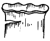
- 판 누르개 압력의 부족
- 다이 모서리 반지름이 너무 크다
- 판(소재)두께의 불균일
- 클리어런스의 부족
(정답률: 알수없음)
2과목: 임의 구분
21. 원주형 업셋팅가공에서 변형전의 직경과 높이를 각각 do, ho라 하고 변형후의 직경과 높이를 각각 d, h라 할때 d를 구하는 식은 ?
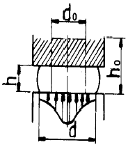
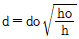
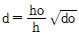
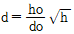
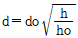
(정답률: 알수없음)
22. 아래 그림과 같은 형식으로 제품을 생산하기 위한 금형을 설계하려면 어느 형식의 금형을 선택하는 것이 가장 좋은가 ?
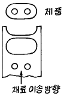
- 이송금형(Transfer)
- 조합금형(combination)
- 복합금형(compound)
- 순송금형(progrerssive)
(정답률: 알수없음)
23. 프레스 금형에서 그림과 같이 다이(die)에 전단각을 주었을때 물건은 어떠한 형상으로 나오겠는가 ?
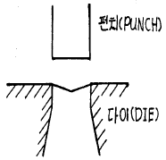
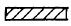
(정답률: 알수없음)
24. 드로잉 금형 설계시 유의 사항중 틀린 것은 ?
- 공정별 클리어런스가 같아서 고려할 필요가 없다.
- 펀치 R과 다이 R의 관계가 제품에 영향을 준다.
- 프레스 작업속도가 제품에 영향을 준다.
- 펀치와 다이의 가공상태가 제품에 영향을 준다.
(정답률: 알수없음)
25. U굽힘으로 가공한 다음에 다이에서 제품을 제거하기 위하여 어떤 기구가 필요한가 ?
- 녹 아웃(Knock out)
- 다우얼 핀(Dowel pin)
- 스트리퍼(Stripper)
- 스프링 백(Spring back)
(정답률: 알수없음)
26. 외형타발(Blanking)에 있어서 형 제작할 때 클리어런스는 어떻게 하면 좋은가 ?
- 클리어런스만 적정하면 펀치측이나 다이측 어느 쪽이라도 제품에는 변화가 없다.
- 펀치를 제품치수와 같게 취하고 다이는 클리어런스분만 크게 한다.
- 다이는 제품치수와 같게 만들고 펀치를 클리어런스분만 작게 한다.
- 다이는 제품치수보다 작게하고, 클리어런스분만 크게 한다.
(정답률: 알수없음)
27. 판두께가 5 mm인 경강제품을 블랭킹 하는데 6,000 kgf의 전단력이 필요하였다. 프레스의 일량은 몇 kgf-m인가? (단, k=0.7 이다.)
- 19
- 21
- 24
- 28
(정답률: 알수없음)
28. 유연성 있는 생산 시스템으로 FA를 추구할 수 있는 생산 시스템은?
- FMS
- MRT
- GT
- DNC
(정답률: 알수없음)
29. NC의 프로그램 구성에서 어드레스(Address)의 기능 중 공구 기능은?
- S
- F
- T
- P
(정답률: 알수없음)
30. 실린더 모양을 한 컨테이너에 넣고 램으로 압력을 가하면서 가공하는 방법은 ?
- 인발가공
- 전조가공
- 압출가공
- 압연가공
(정답률: 알수없음)
31. 전해 가공에 관한 다음 설명중 틀린 것은 ?
- 공작물을 양극으로 하여 통전한다.
- 전기화학적 작용으로 연마하는 가공법이다.
- 초경질 합금 등의 가공에 쓰인다.
- 가공변질층이 생기므로 가공면이 나쁘다.
(정답률: 알수없음)
32. 다음중 각종 형 제작에 대한 방법 중 주조에 의한 형 제작법에 속하지 않은 것은?
- 쇼프로세스에 의한 방법
- 모방조각기에 의한 방법
- 합성수지에 의한 방법
- 저융점 합금에 의한 방법
(정답률: 알수없음)
33. 다음 중 다이캐스팅용 알루미늄 합금과 관계 없는 것은?
- 알코아(Alcoa)
- 실루민(Silumin)
- 베이나이트(Bainite)
- 하이드로 날륨(Hydronalium)
(정답률: 알수없음)
34. 브로우칭(broaching)작업은 어느 경우에 가장 유효하게 이용될 수 있는가?
- 나선형의 홈을 가공할 때
- 복잡한 형상의 구멍을 가공할 때
- 회전 대칭형의 축을 가공할 때
- 기어를 정밀가공할 때
(정답률: 알수없음)
35. 지그(Jig)를 구성하는 요소가 아닌 것은 ?
- 공작물의 위치 결정구
- 각종 공구 및 게이지
- 공작물의 클램핑 기구
- 공구의 안내 및 위치 결정구
(정답률: 알수없음)
36. 중공(中空)제품의 축선을 센터링(centering)시키는데 가장 적합한 것은 ?
- V블록
- 콜릿(collet)
- 원추로케이터
- 단동척
(정답률: 알수없음)
37. 지그 부시에 대해 설명 중 틀린 것은 ?
- 드릴 지그는 거의 전부가 위치결정이나 센터내기를 하는데 사용된다.
- 지그 부시는 내마멸성이 좋은 재료를 사용한다.
- 일반적으로 지그판은 주로 경강을 사용하여야 한다.
- 부시는 고정식과 끼워 맞춤식이 있다.
(정답률: 알수없음)
38. 클램프를 설계할 때 고려해야 할 사항이 아닌 것은 ?
- 절삭력에 충분히 견딜수 있어야 한다.
- 공작물을 장착, 장탈하는데 지장이 없어야 한다.
- 마모가 심한 부분은 열처리 등을 한다.
- 절삭력의 방향과 반대방향으로 힘이 가해져야 한다.
(정답률: 알수없음)
39. 칩 배출이 가장 용이한 지그는 ?
- 바깥지름 지그(Diameter Jig)
- 개방 지그(Open Jig)
- 리프 지그(Leaf Jig)
- 상자형 지그(Box Jig)
(정답률: 알수없음)
40. 기초원 지름 242mm, 잇수 50인 스퍼기어의 법선 피치를 구하면 몇 약mm인가?
- 9.997
- 15.2⑤
- 29.976
- 33.209
(정답률: 알수없음)
3과목: 임의 구분
41. 다이얼 인디케이터는 어디에 측정치가 나타나는 게이지인가 ?
- 허브와 딤블
- 철자
- 바늘이 있는 눈금판
- 캘리퍼스
(정답률: 알수없음)
42. 표면거칠기를 측정하는 방법으로 가장 옳지 않은 것은 ?
- 표면거칠기 기준편과 비교하는 방법
- 촉침법
- 광선 반사법
- 광택법
(정답률: 알수없음)
43. 사인바(sine bar)에 의한 각도측정시 45° 이상의 각도 측정에서 큰 오차가 발생되는 이유로 가장 타당한 것은?
- 오차함수가 탄젠트 함수로 되므로 45° 이상에서는 심한 오차가 발생하기 때문이다.
- 측정시 사인바를 설치할 때 자세에 의한 오차가 발생하기 때문이다.
- 사인바의 롤러 중심거리가 짧으므로 45° 이상에서 균형이 맞지않기 때문이다.
- 사인바의 측정면의 정밀도가 45° 이상에서 저하되기 때문이다.
(정답률: 알수없음)
44. 한계 게이지의 마멸 여유는 일반적으로 어느 쪽에 주는가 ?
- 정지측에 준다.
- 통과측에 준다.
- 양쪽에 다 준다.
- 양쪽에 모두 주지 않는다.
(정답률: 알수없음)
45. 다음 중 3차원의 기하학적 형상 모델링이 아닌 것은?
- 와이어 모델링
- 서피스 모델링
- 시스템 모델링
- 솔리드 모델링
(정답률: 알수없음)
46. 서보기구의 제어회로 방식 중 가격이 고가이고, 고정밀도가 요구될 때 사용하는 것은?
- 개방회로방식
- 복합회로 서보방식
- 폐쇄회로방식
- 반폐쇄회로방식
(정답률: 알수없음)
47. G45 보정이 -12.000 일때 사실상의 보정량이 2.000 이면 이동량은?
- 8.000
- 10.000
- 12.000
- 14.000
(정답률: 알수없음)
48. 2차원 변환행렬이 다음과 같을 때 좌표변환은 ?
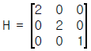
- 확대
- 회전
- 대칭
- 이동
(정답률: 알수없음)
49. CNC 밀링에서 ø20 mm인 엔드밀로 GC25를 가공하고자 할 때 주축의 회전수는 몇 rpm인가? (단, 절삭속도는 100m/min 이다.)
- 890
- 1090
- 1390
- 1592
(정답률: 알수없음)
50. 다음중 펌프에서 소음이 나는 원인과 가장 관계가 없는 것은?
- 펌프에서 흡입불량
- 에어필터 막힘
- 이물질의 침입
- 작동압력이 높음
(정답률: 알수없음)
51. 다음 중 공장자동화 생산시스템에 필요한 기술 중 맞지 않는 것은 ?
- Computer Aided Design(CAD)
- Computer Aided Manufacturing(CAM)
- Flexible Manufacturing System(FMS)
- Quality Innovation(QI)
(정답률: 알수없음)
52. 다음 중 LAN의 통신 프로토콜과 가장 거리가 먼 것은 ?
- 토큰패스
- 토큰 링
- CSMA/CD
- IEEE-488
(정답률: 알수없음)
53. 다음 중 홀센서에 대하여 가장 올바르게 설명한 것은 ?
- 자장을 가하면 자장에 비례한 전압이 발생한다.
- 자장을 가하면 자장에 비례한 저항이 변한다.
- 전류가 흐르면 전류에 비례하여 저항이 변한다.
- 전류가 흐르면 전류에 비례하여 자장이 발생한다.
(정답률: 알수없음)
54. AC Servo 제어기기의 주회로 전원과 제어전원의 투입 및 차단시 투입 순서로서 옳은 것은?
- 주회로 전원을 먼저 투입하고, 제어전원을 투입한다.
- 제어전원을 먼저 차단하고, 주회로 전원을 차단한다.
- 어느 회로가 먼저 투입, 차단이 되든 관계가 없다.
- 제어전원을 먼저 투입하고, 주회로 전원을 투입한다.
(정답률: 알수없음)
55. 어떤 측정법으로 동일 시료를 무한 횟수 측정하였을 때 데이터의 분포의 평균치와 참값과의 차를 무엇이라 하는가?
- 신뢰성
- 정확성
- 정밀도
- 오차
(정답률: 알수없음)
56. 예방보전의 기능에 해당하지 않는 것은?
- 취급되어야 할 대상설비의 결정
- 정비작업에서 점검시기의 결정
- 대상설비 점검개소의 결정
- 대상설비의 외주이용도 결정
(정답률: 알수없음)
57. 관리한계선을 구하는데 이항분포를 이용하여 관리선을 구하는 관리도는?
- Pn 관리도
- U 관리도
 관리도
관리도- X 관리도
(정답률: 알수없음)
58. 로트(Lot)수를 가장 올바르게 정의한 것은?
- 1회 생산수량을 의미한다.
- 일정한 제조회수를 표시하는 개념이다.
- 생산목표량을 기계대수로 나눈 것이다.
- 생산목표량을 공정수로 나눈 것이다.
(정답률: 알수없음)
59. 다음의 데이터를 보고 편차 제곱합(S)을 구하면? (단, 소숫점 3자리까지 구하시오.)
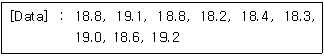
- 0.338
- 1.029
- 0.114
- 1.014
(정답률: 알수없음)
60. 공정 도시기호중 공정계열의 일부를 생략할 경우에 사용되는 보조 도시기호는?

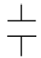


(정답률: 알수없음)